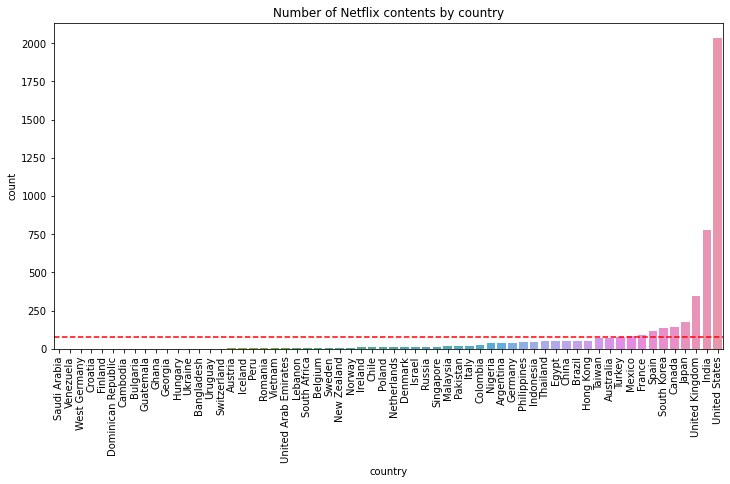
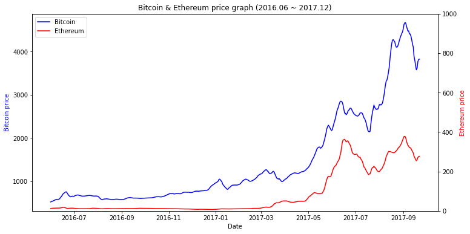

이번 글에서는 프로그래머스 인공지능 데브코스의 3주차 강의에 대한 정리입니다.
지금까지 기본적인 파이썬의 자료구조와 알고리즘 그리고 크롤링과 기초 수학 등을 학습했습니다.
이번 주에는 파이썬에서 데이터를 다루는데 필요한 기초 패키지인 Numpy와 Pandas를 학습합니다.
파이썬으로 데이터를 다뤄보신 분들이라면, 익히 들어보셨을 해당 패키지들의 기본적인 내용을 보겠습니다.
1. Numpy 실습
1
2
3
4
5
6
7
8
9
10
11
12
13
14
15
16
17
18
19
20
21
22
23
24
25
26
27
28
29
30
31
import numpy as np
### Numpy array shape
A = np.array([[1, 2, 3], [3, 4, 5], [6, 3, 4]]) # shape_of_A = (3, 3)
### Numpy one, zero array
A = np.ones(shape=(2, 1, 3))
B = np.zeros(shape=(3, 4, 2))
### Numpy random array
A = np.random.randn(4, 3, 3)
B = np.random.normal(loc=1.56, scale=0.67, size=(5, 6)) # 평균 1.56, 표준편차 0.67
C = np.random.randint(10, 21, size=(3, 4)) # 10부터 20까지 임의의 정수를 담은 배열
### Numpy indexing
arr = np.random.randn(4, 5, 7, 8)
answer = arr[2, 2, 3, 3] # arr의 (2, 2, 3, 3) 번째 요소 값 읽기
### Numpy changing certain element
arr = np.random.randn(5, 3, 3, 6, 7)
arr[1, 2, 2, 3, 4] = 0 # arr의 (1, 2, 2, 3, 4) 번째 요소 값을 0으로 변경
### Numpy addition (+)
arr_A = np.array([[1, 2, 3], [3, 4, 5]])
arr_B = np.ones(shape=(2, 3))
np_result = arr_A + arr_B # A와 B 배열의 합
### Numpy multiply (*)
arr_A = np.array([[3, 6], [2, 7]])
arr_B = np.ones(shape=(2, 2))
np_result = arr_A * arr_B # A와 B 배열의 곱
- 지금까지의 연산은 shape이 같은 두 배열 사이에서 적용된 것들
- 즉, 두 배열 사이에 shape이 다르다면, 연산이 제대로 동작하지 않음
- 그런데 Numpy에서 같은 shape이 아니더라도 연산이 가능한 경우가 있음
- Numpy에서 배열의 shape이 다르더라도 자동으로 맞춰 연산하는 것을
브로드캐스팅이라고 함
1
2
3
4
5
6
7
8
9
10
11
12
13
14
15
16
17
18
19
20
21
22
23
24
25
26
27
28
29
30
31
32
33
34
35
36
37
38
39
40
41
42
43
44
45
46
47
48
49
50
51
52
53
54
import numpy as np
### Numpy dot
A = np.random.randint(1, 4, size=(2, 3))
B = np.random.randint(1, 4, size=(3, 2))
C = np.dot(A, B) # A와 B의 행렬 곱 연산
### Numpy 1d array slicing
arr = [i * j for j in range(10) for i in range(10)]
arr = np.array(arr)
result = arr[42:57] # arr의 42번 인덱스부터 56번 인덱스까지 슬라이싱
arr[35:50] = 1 # arr의 35번 인덱스부터 49번 인덱스까지 요소 값을 1로 변경
### Numpy 2d array slicing
arr = [[i * j for i in range(10)] for j in range(10)]
arr = np.array(arr)
result = arr[3:7, 7:10] # arr의 (3, 7)에서 (6, 9)까지 슬라이싱
arr[2:6, 3:8] = 0 # arr의 (2, 3)부터 (5, 7)까지 요소 값을 0으로 변경
### Numpy 2d array가 주어질 때, (y1, x1)에서 (y2, x2)까지 요소에 2를 곱한 배열 반환
def solution(arr, y1, x1, y2, x2):
arr[y1:y2+1, x1:x2+1] *= 2
return arr
### Numpy 내적 연산
def solution(x, w, b):
return np.dot(x, w) + b
### Numpy bool 인덱싱
arr = np.random.randint(0, 100, size=(5, 6, 3))
result = arr[(arr > 10) & (arr <= 20)] # 10보다 크고, 20보다 작거나 같은 요소 추출
### Numpy 관계 연산
A = np.random.randint(0, 100, size=(3, 3, 3))
result = (A == 52) | (A == 1) # A 안에 52 또는 1인 요소와 같은 위치에 True, 다른 곳은 False
### Numpy 배열 만들기
A = [1, 2, 3, 4, 5]
np_A = np.array(A) # np.array()를 이용하여 numpy.ndarray 타입의 배열 만들기
### Numpy matmul() 함수
a = np.random.randn(3, 16, 64)
b = np.random.randn(3, 64, 8)
dot_result = np.dot(a, b)
matmul_result = np.matmul(a, b)
### Numpy 브로드캐스팅 스칼라
a = np.array([[2, 7, 5], [6, 6, 1]])
result = a * 2 # 행렬 a에 모든 요소 별로 2를 곱함
### Numpy any(), all()
arr = np.random.randint(0, 100, size=(3, 3, 3))
result1 = ((arr == 52) | (arr == 1)).any() # arr에 52 또는 1이 있는지 확인
result2 = (arr[0, :, :] >= 20).all() # 해당 범위의 요소가 모두 20 이상의 수를 가지고 있는지 확인
Numpy의 np.dot()과 np.matmul()의 차이
- numpy 패키지에서 dot 함수 documentation
- dot과 matmul 함수는 2d array까지의 결과는 동일
- But, 2차원보다 더 큰 nd array에서는 결과가 다르다는 것을 확인할 수 있음
1
2
3
4
5
6
7
8
9
10
11
12
13
14
15
16
import numpy as np
### 2d array dot, matmul
a = np.array([[1,2], [2,3]])
b = np.array(([8,4], [4,7]))
print(np.dot(a,b)) # [[16 18] [28 29]]
print(np.matmul(a, b)) # [[16 18] [28 29]]
print(a @ b) # np.matmul()과 @ 연산은 동일
### 3d array dot, matmul
a = np.random.rand(2, 3, 3)
b = np.random.rand(2, 3, 3)
c = (a @ b)
d = np.dot(a,b)
print(c, c.shape) # shape: (2, 3, 3)
print(d, d.shape) # shape: (2, 3, 2, 3)
2. Python으로 데이터 다루기 - Numpy
[참고] Git과 Github 그리고 Branch란 무엇인가?
- Git은 분산 버전관리 시스템 (Distributed version control system)
- 원격 Repository와 로컬 Repository로 구분하여 협업하는데 사용
- Git 저장소에서 파일의 상태를 주목하라
- Local working directory (Unstaged area)
- Local staging area
- Local repository, Remote repository
- Branch: 코드의 흐름을 분산 - 가지치기 (Git-Flow)
- Github: 가장 대표적인 원격 저장소
- Pull Request를 만들어서 다른 사람들과 함께 협업하기
1
2
3
4
5
6
7
8
9
10
11
12
13
14
git init # 로컬 저장소 생성
git status # 저장소의 상태 확인
git add example.py # example.py를 unstaged에서 staged로 이동
git commit -m "Add example.py" # commit message 작성
git log # commit 기록 확인 (author, commitor, date 등)
git branch <branch_name> # 새로운 branch 생성
git checkout <branch_name> # 현재 작업 중인 branch를 전환
git merge <branch_name> # 현재 작업 중인 branch_name를 원하는 branch에 병합
git branch -d <branch_name> # branch를 삭제
git remote add <별칭> <원격저장소 주소> # 원격 저장소 설정
git push <원격_레포_이름> <branch_name> # 로컬 작업을 원격 레포지토리에 push
git clone <repo_uri> # 원격 저장소를 로컬에 저장하기
Numpy 연산, 선형 대수
- Array의 Indexing, Slicing: python의 list와 유사
- Array의 Boradcasting: (m * n & m * 1), (m * n & 1 * n), (m * 1 & 1 * n)
- 영벡터 (영행렬): np.zeros(dim)을 통해서 생성할 수 있음
- 일벡터 (일행렬): np.ones(dim)을 통해서 생성할 수 있음
- 대각행렬: np.diag(main_diagonal)을 통해서 생성할 수 있음
- 항등행렬: main diagonal이 1인 대각행렬. np.eye()를 통해서 생성할 수 있음
- 행렬곱 (dot product): 행렬 간의 곱 연산
- 트레이스: main diagonal의 합. np.trace()를 통해서 생성할 수 있음
- 행렬식 (determinant): 행렬을 대표하는 값들 중 하나. np.linalg.det()으로 계산 가능
- 역행렬: 행렬 A에 대해 AB = BA = 1를 만족하는 행렬 B = A^-1. np.linalg.inv()으로 계산 가능
- 고유값과 고유벡터 (eigenvalue, eigenvector): np.linalg.eig()으로 계산 가능
3. Python으로 데이터 다루기 - Pandas
Pandas 시작하기
- Table: 행과 열을 이용해서 데이터를 저장하고 관리하는 자료구조 (컨테이너)
- Series: 1d labeled array, 인덱스를 지정해 줄 수 있음
- Series는
name속성을 가지고 있음 - 처음 Series를 만들 때, 이름을 붙일 수 있음
- Series는
- DataFrame: 2d labeled table, 인덱스를 지정해 줄 수 있음
- DataFrame의 각 column은 Series 형태임
- head(): 처음 n개의 데이터 참조
- tail(): 마지막 n개의 데이터 참조
- loc[row, col]: 인덱스를 이용해서 가져오기
- iloc[rowidx, colidx]: 숫자 인덱스를 이용해서 가져오기
- split: 특정한 기준을 바탕으로 DataFrame 분할
- apply: 통계함수 (sum, mean, median 등)를 적용해서 각 데이터 압축
- combine: apply 된 결과를 바탕으로 새로운 Series 생성
4. Python으로 시각화하기 - Matplotlib
Matplotlib 시작하기
- Matplotlib: 파이썬의 데이터 시각화 라이브러리
- 꺾은선 그래프, 산점도, 박스 그림, 막대 그래프, 히스토그램, 원형 그래프
- 박스 그림: Q1, Q2, Q3, min, max 정보를 담고 있음
- Seaborn: Matplotlib을 기반으로 더 다양한 시각화 방법을 제공하는 라이브러리
- 커널밀도그림, 카운트그림, 캣그림, 스트립그림, 히트맵
5. Python으로 시각화 프로젝트
- Mission 1. Netflix and Code
- 넷플릭스 데이터를 활용
- 한국 작품은 총 얼마나 있는지?
- 가장 많은 작품이 올라간 국가는 어디이고, 얼마나 많은 작품이 있는지?

- Mission 2. 가상화폐 가즈아!

6. 3주차 돌아보기
- 기간: 2022. 10. 03 ~ 2022. 10. 08
9월 말 일자를 기준으로 퇴사를 하게 되어 이번 주는 데브코스 3주차이면서, 퇴사 후 첫번째 주차이기도 했다. 아무래도 회사에 있을 때보다는 시간적 그리고 심적 여유가 생긴 주차였다. 데브코스에서는 이번 주까지 해서 파이썬의 기초와 자료구조와 알고리즘, 크롤링, 기초 수학 그리고 pandas, numpy까지 학습을 마무리 했다. 아무래도 이 주제들은 과거에 접해보았거나, (끝은 없겠지만) 고민해보았던 주제여서 그나마 지금까지 따라가는데 어려움은 없었던 것 같다.
지금까지 경험하지 못했던 시간적 여유 속에 참 역설적이지만 내 시간의 주인이 온전히 내가 된 것 같은 느낌이었다. 대학교를 다닐 때는 수업과 과제 그리고 모임으로 내 시간을 스스로 통제하기 보다는 외부적 요인으로 통제 당했던 것 같다. 물론 회사를 다녔던 그 시기도 동일할 것이다. 그런데 지금은 그 시간 속에 내가 주체성을 가지고 통제하고 있는 것 같다. 지금껏 느껴보지 못했던 기분이라서 처음에는 조금 어색했지만, 성향상 가만히 있지 못하고 나름의 계획을 세우기 시작했다.
학교 다니면서, 회사 다니면서 하고 싶었지만 하지 못했던 많은 것들을 조금씩 정리해두었는데, 이 시간들이 나에게는 그것들을 하기에 너무 좋은 기회라는 생각이 들었다. 완전한 (것 같으면서도 그렇지 않는) 자유 속에서 이 시간들을 아주 소중히, 그리고 뜻깊게 사용하고 싶다. 크고 작은 계획들을 세우고 기록하고 있는데, 잘 정리되고 마무리가 된다면 블로그에도 기록해두고 싶다.
다음 주에는 데브코스에서는 flask와 AWS 등의 새로운 주제를 배울텐데, 또 새로운 것들을 배울 수 있는 기회에 감사하다!
출처: 프로그래머스 인공지능 데브코스 4기 3주차 강의 -> 강의 내용 정리 깃허브 링크